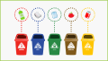

Мониторинг вывоза мусора
Найдите контейнер для твердых коммунальных отходов или бункер для крупногабаритных отходов рядом с вашим домом на интерактивной карте и проверьте время последнего вывоза.
Найти контейнерКак правильно разделять отходы?
Чтобы сортировка собственного мусора приносила пользу обществу и экологии, нужно узнать, какие бытовые отходы бывают, как правильно определять их виды и как разделять. Изучите небольшую ин- струкцию и сортируйте отходы правильно.
Смотреть